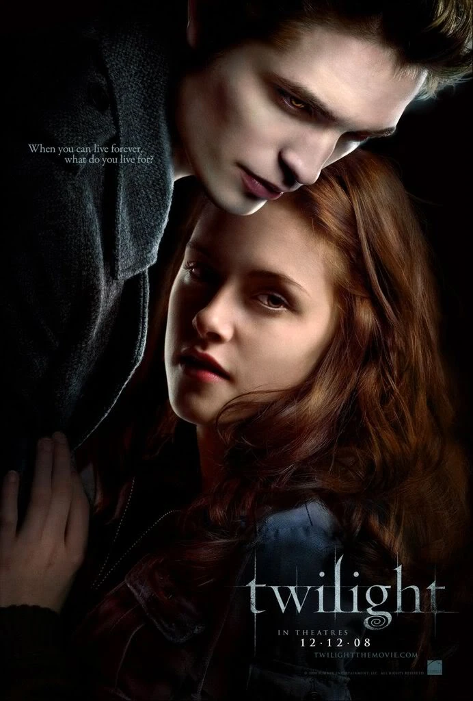
2008
THE TWILIGHT SAGA
ENTRE LA NIEBLA Y LA ETERNIDAD
FORKS, WASHINGTON
Adentrate en un mundo donde humanos, vampiros y lobos conviven entre secretos, peligro y un amor imposible de ignorar.
CINCO PELÍCULAS
Un amor imposible, alianzas inesperadas y una historia que atraviesa dos mundos.

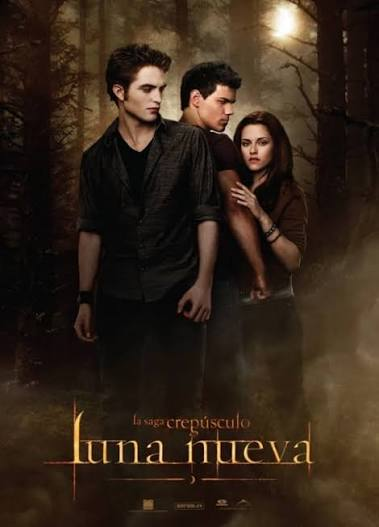
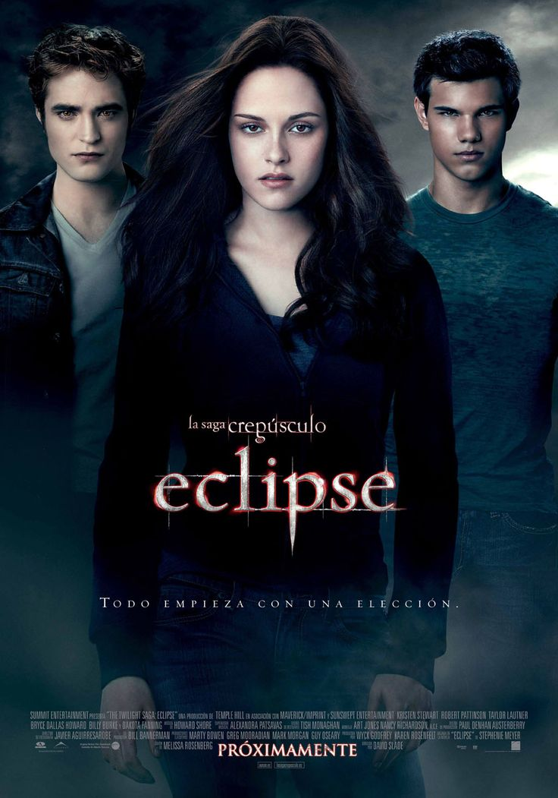

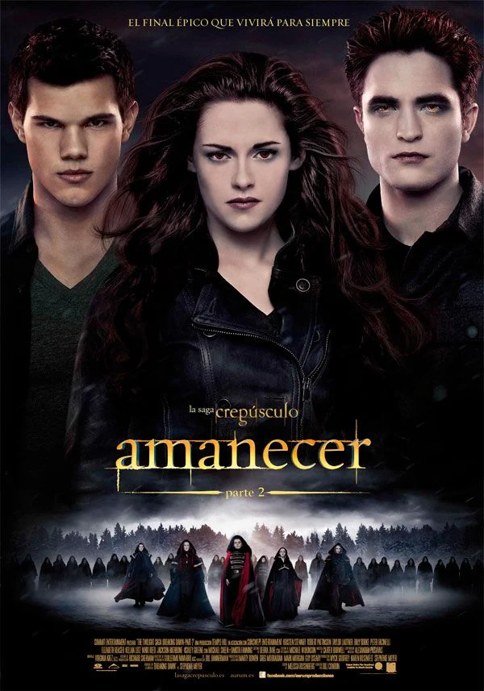
ELEGÍ UN LADO
Humanos, vampiros y cambiaformas conviven en un equilibrio mucho más frágil de lo que parece.
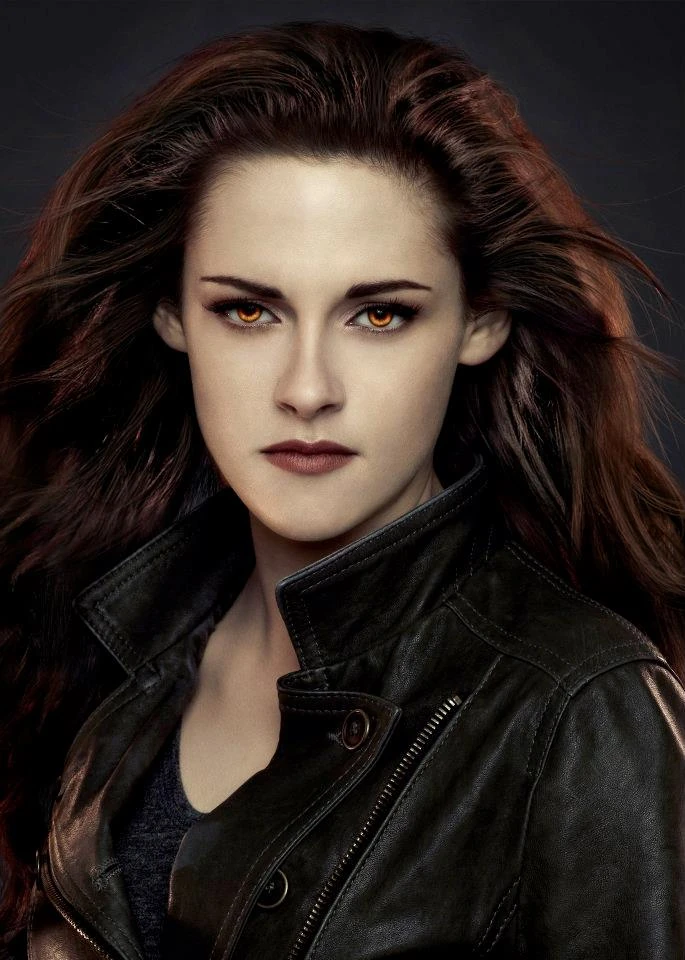
Curiosa · decidida · protectora
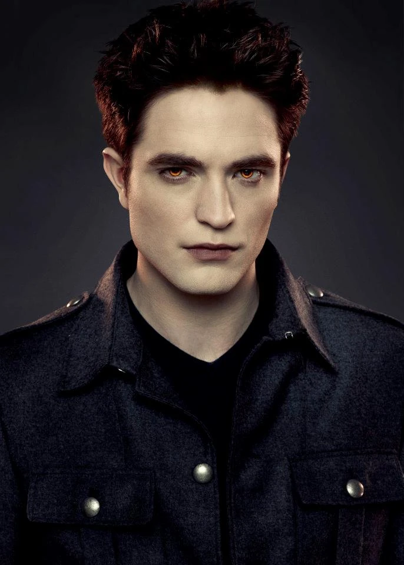
Telepatía · control · Cullen
Lealtad · fuerza · Quileute
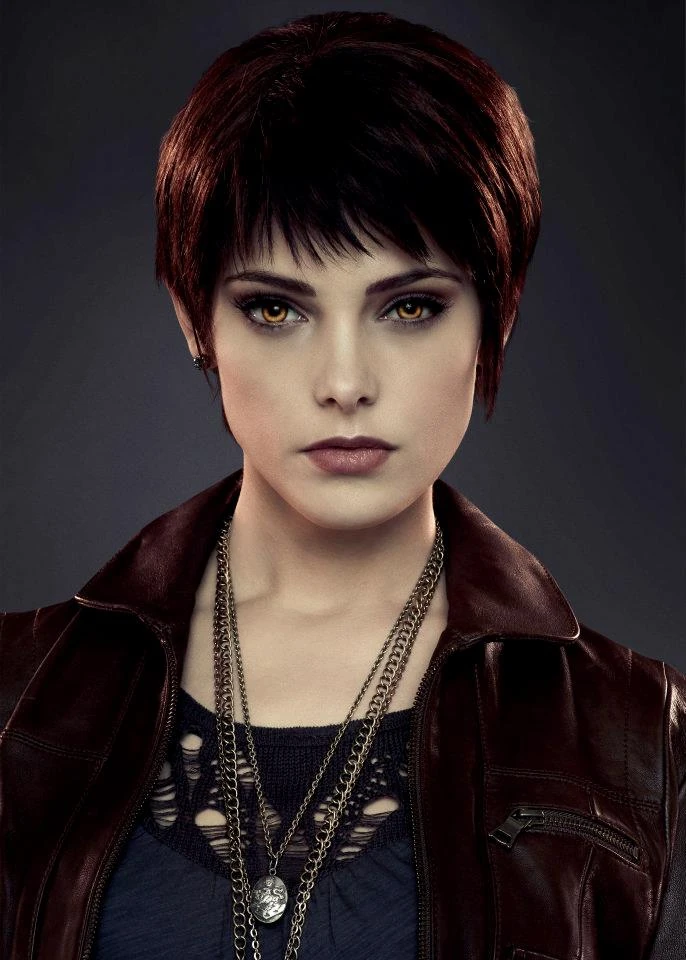
Visiones · energía · Cullen
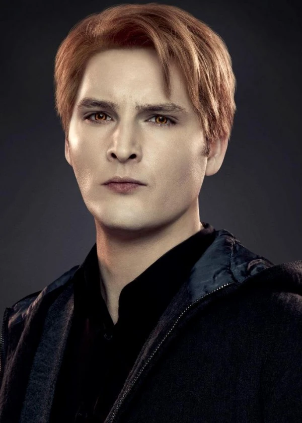
Médico · compasión · líder
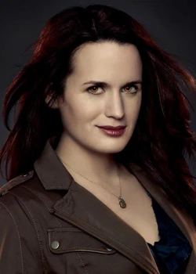
Familia · calidez · Cullen
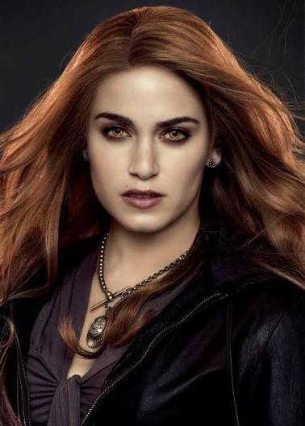
Determinación · orgullo · Cullen
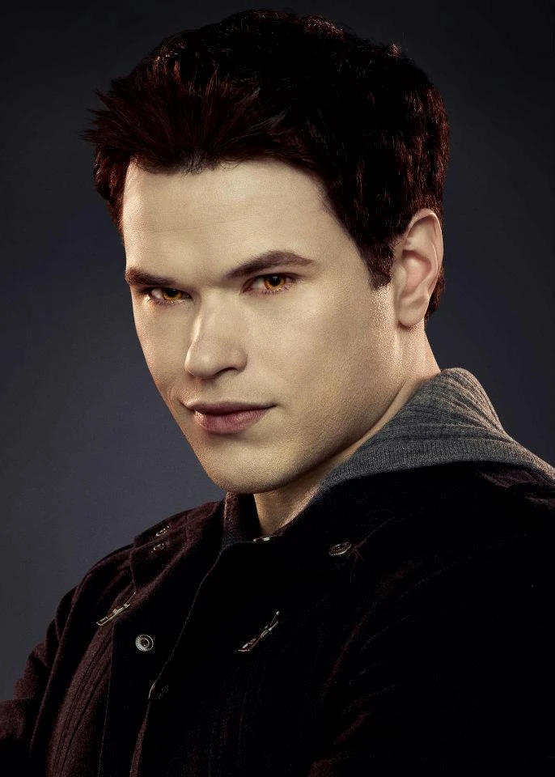
Fuerza · humor · Cullen
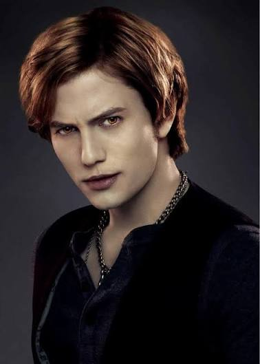
Emociones · estrategia · Cullen
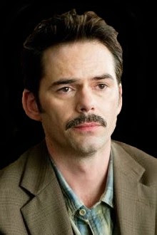
Protector · reservado · Forks
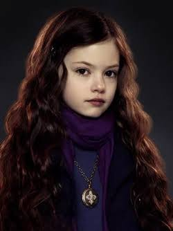
Familia · vínculo · futuro
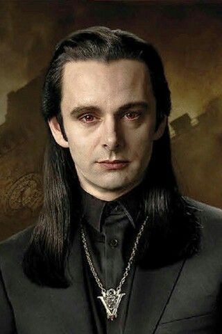
Poder · antigüedad · Volturi
Usá las flechas para explorar los personajes.
EXPLORÁ EL UNIVERSO
Cada lugar esconde una parte diferente de la historia.
SECRETOS DE LA SAGA
Tocá cada tarjeta para revelar el dato.
TU IDENTIDAD EN FORKS
Contestá seis preguntas y descubrí qué porcentaje tenés de cada mundo.
Tus elecciones van a determinar el resultado.
TU RESULTADO
TODAVÍA QUEDAN SECRETOS
TWILIGHT ARCHIVE